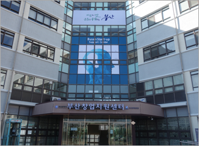

부산광역시가 설립하고 부산경제진흥원이 운영하는 ‘부산창업지원센터’는 예비 청년 창업가를 비롯 1인 창조기업, 초기 벤처창업기업 등을 지원하기 종합 창업지원 시설입니다.
‘부산창업지원센터’는 청년창업가 보육을 위한 ‘청년창업지원센터’를 비롯 창업 초기업체들을 지원하기 위한 ‘수료업체 사후지원센터’, 1인 창조기업 창업을 지원하기 위한 중소기업청의 ‘부산시 1인창조기업 비즈니스센터’ 등 3개 시설이 입주해 있습니다.

창업가들을 위한 70여개의 창업보육실을 비롯 제품전시 홍보실, 세미나실, 교육장, 제품 촬영실, 상담실, 비즈니스실 등 다양한 부대시설을 구비해 창업을 지원하고 있습니다.
이와 함께 창업에 필요한 창업실무 교육과 컨설팅, 교류회, 사업화 자금 및 창업자금 지원, 다양한 판매지원사업 및 창업정보제공 등을 통해 창업을 준비하는 예비 창업가나 창업 초기 업체들의 창업에 실질적 도움을 주고 있습니다.
‘부산창업지원센터’는 창업을 통해 양질의 일자리를 창출하고 창조와 도전 정신으로 마래 부산의 산업구조를 재편할 고부가가치 산업 육성의 요람으로 제 기능을 다할 것입니다.